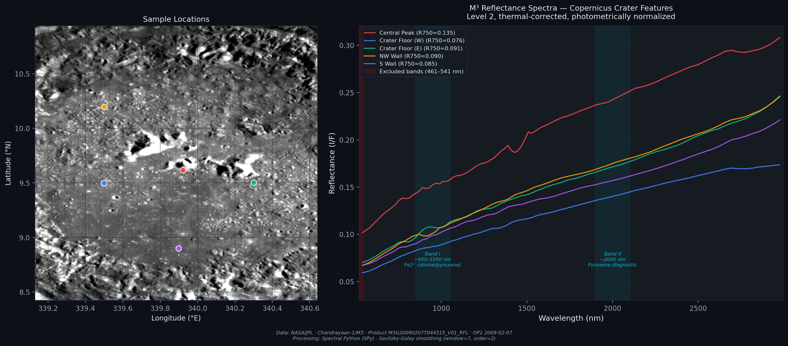
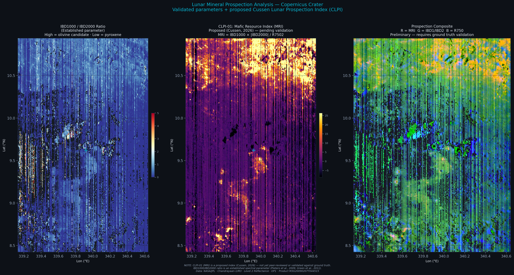

Mapeo Mineral Lunar — Cráter Copernicus
mediante Moon Mineralogy Mapper (M3)
Lunar Mineral Mapping — Copernicus Crater
via Moon Mineralogy Mapper (M3)
Análisis de datos de reflectancia Level 2 del instrumento Moon Mineralogy Mapper (M3) a bordo de Chandrayaan-1 (NASA/ISRO). El objetivo es el cráter Copernicus (~9.6°N, 339.9°E), un cráter complejo joven cuyas cumbres centrales exponen material rico en olivino interpretado como manto superior lunar. Se procesan 85 bandas espectrales (430–3000 nm) a 140 m/pixel del Período Óptico 1 (Nov 2008 – Feb 2009) para discriminar fases minerales (olivino, piroxeno LCP/HCP) y generar índices de prospección de recursos lunares (CLPI — Cussen Lunar Prospection Indices).
Analysis of Level 2 reflectance data from the Moon Mineralogy Mapper (M3) instrument aboard Chandrayaan-1 (NASA/ISRO). The target is Copernicus Crater (~9.6°N, 339.9°E), a young complex crater whose central peaks expose olivine-rich material interpreted as upper mantle. We process 85 spectral bands (430–3000 nm) at 140 m/pixel from Optical Period 1 (Nov 2008 – Feb 2009) to discriminate mineral phases (olivine, LCP/HCP pyroxene) and derive lunar resource prospection indices (CLPI — Cussen Lunar Prospection Indices).
Composición Mineral: R=IBD1000, G=IBD2000, B=R750
Mineral Composite: R=IBD1000, G=IBD2000, B=R750
Composición RGB clásica de parámetros espectrales M3 para la discriminación mineralógica a escala regional. Los colores codifican la profundidad de absorción integrada a 1 μm (IBD1000, máficos) y 2 μm (IBD2000, piroxenos), con la reflectancia en 750 nm como proxy de albedo.
Classic M3 spectral parameter RGB composite for regional mineralogical discrimination. Colors encode integrated band depth at 1 μm (IBD1000, mafics) and 2 μm (IBD2000, pyroxenes), with 750 nm reflectance as an albedo proxy.

Los tonos verdes indican piroxeno dominante (alta absorción a 2 μm), los rojos revelan olivino (fuerte absorción a 1 μm sin absorción significativa a 2 μm), y los tonos azulados corresponden a materiales de tierras altas con alto albedo (anortosita). Las cumbres centrales de Copernicus muestran firma olivinítica prominente, consistente con excavación profunda de material del manto superior.
Green tones indicate dominant pyroxene (strong 2 μm absorption), reds reveal olivine (strong 1 μm absorption without significant 2 μm feature), and blue tones correspond to high-albedo highland materials (anorthosite). Copernicus central peaks show a prominent olivine signature, consistent with deep excavation of upper mantle material.
Mapa de Discriminación de Piroxenos — Centros de Banda 1 y 2
Pyroxene Discrimination Map — Band 1 & 2 Centers
El mapeo de centros de absorción permite discriminar entre piroxeno de bajo calcio (LCP — ortopiroxeno) y piroxeno de alto calcio (HCP — clinopiroxeno). Los centros de banda se obtienen tras la remoción del continuo en las regiones de 1 μm y 2 μm.
Band center mapping enables discrimination between low-calcium pyroxene (LCP — orthopyroxene) and high-calcium pyroxene (HCP — clinopyroxene). Band centers are derived after continuum removal in the 1 μm and 2 μm regions.

El mapa muestra la zonación composicional de piroxenos en las paredes y el piso del cráter. Las zonas con centros de banda cortos (LCP, tonos fríos) dominan las paredes superiores, mientras que los piroxenos de alto calcio (HCP, tonos cálidos) se concentran en el piso y los depósitos de impacto fundido.
The map shows pyroxene compositional zonation in the crater walls and floor. Short band-center zones (LCP, cool tones) dominate the upper walls, while high-calcium pyroxenes (HCP, warm tones) concentrate on the floor and impact melt deposits.
Compuesto de Prospección Lunar CLPI — R=MRI, G=HPI, B=R750
CLPI Lunar Prospection Composite — R=MRI, G=HPI, B=R750
Composición RGB de los índices CLPI propuestos para visualizar simultáneamente recursos máficos (olivino+piroxeno), potencial de hidratación y albedo superficial. Este marco de prospección traslada directamente la metodología terrestre SST/KHAI al contexto lunar.
RGB composite of the proposed CLPI indices to simultaneously visualize mafic resources (olivine+pyroxene), hydration potential, and surface albedo. This prospection framework directly transfers the terrestrial SST/KHAI methodology to the lunar context.

Los tonos rojos intensos destacan zonas de alta concentración máfica (olivino puro en cumbres centrales). Los tonos verdes revelan señales sutiles de hidratación detectadas en latitudes más altas de la escena. El canal azul normaliza por albedo, permitiendo discriminar entre materiales oscuros máficos y brillantes de tierras altas.
Intense red tones highlight high mafic concentration zones (pure olivine on central peaks). Green tones reveal subtle hydration signals detected at higher latitudes in the scene. The blue channel normalizes by albedo, enabling discrimination between dark mafic and bright highland materials.
Índices de Prospección Lunar Propuestos
Proposed Lunar Prospection Indices
Tres índices espectrales propuestos para la evaluación cuantitativa de recursos minerales y volátiles lunares a partir de datos hiperespectrales M3. Estos índices son propuestos y están pendientes de validación.
Three spectral indices proposed for quantitative assessment of lunar mineral and volatile resources from M3 hyperspectral data. These indices are proposed and pending validation.
| Código | Code | Nombre | Name | Fórmula | Formula | Descripción | Description |
|---|---|---|---|---|---|---|---|
| CLPI-01 | MRI (Mafic Resource Index) | IBD1000 × IBD2000 / R750² | Concentración de recursos máficos normalizada por albedo | Mafic resource concentration normalized by albedo | |||
| CLPI-02 | HPI (Hydration Prospection Index) | Band depth @ 2800 nm | Profundidad de absorción a 2800 nm como proxy de OH/H2O | Band depth at 2800 nm as OH/H2O proxy | |||
| CLPI-03 | OPI (Olivine Purity Index) | BD1 × max(0, 1 − BD2/0.05) | Discrimina olivino puro vs mezcla olivino-piroxeno | Discriminates pure olivine vs olivine-pyroxene mixture |
Resultados y Conclusiones
Results and Conclusions
Datos, procesamiento y stack técnico
Data, processing, and tech stack
| Parámetro | Parameter | Detalle | Detail |
|---|---|---|---|
| Instrumento | Instrument | Moon Mineralogy Mapper (M3) — Chandrayaan-1 | |
| Nivel de producto | Product level | Level 2 — Reflectance (thermally corrected) | |
| Período | Period | Optical Period 1 (OP1) — Nov 2008 – Feb 2009 | |
| Objetivo | Target | Copernicus Crater (~9.6°N, 339.9°E) | |
| Bandas espectrales | Spectral bands | 85 bandas (430–3000 nm) | |
| Resolución espacial | Spatial resolution | 140 m/pixel | |
| Formato de datos | Data format | PDS3 (NASA Planetary Data System) | |
| Fuente de descarga | Data source | PDS Geosciences Node (pds-geosciences.wustl.edu) | |
| Ingestión de datos | Data ingestion | Spectral Python (SPy) + pvl | |
| Máscara de calidad | Quality mask | Shadows, saturation, detector artifacts | |
| Lenguaje | Language | Python 3.12 | |
| Librerías | Libraries | spectral (SPy) · pvl · NumPy · SciPy · Matplotlib |
Bibliografía
Bibliography
- Pieters, C.M. (1982). Copernicus Crater Central Peak: Lunar Mountain of Unique Composition. Science, 215(4528), 59–61.
- Pieters, C.M. et al. (2009). Character and Spatial Distribution of OH/H2O on the Surface of the Moon Seen by M3 on Chandrayaan-1. Science, 326(5952), 568–572.
- Green, R.O. et al. (2011). The Moon Mineralogy Mapper (M3) imaging spectrometer for lunar science. JGR: Planets, 116(E10).
- Clark, R.N. et al. (2011). Thermal removal from near-infrared imaging spectroscopy data of the Moon. JGR: Planets, 116(E6).
- Clark, R.N. & Roush, T.L. (1984). Reflectance Spectroscopy: Quantitative Analysis Techniques for Remote Sensing Applications. JGR: Solid Earth, 89(B7), 6329–6340.
- Milliken, R.E. & Li, S. (2017). Remote detection of widespread indigenous water in lunar pyroclastic deposits. Nature Geoscience, 10, 561–565.
- Li, S. et al. (2018). Direct evidence of surface exposed water ice in the lunar polar regions. PNAS, 115(36), 8907–8912.
- Moriarty, D.P. & Pieters, C.M. (2018). The Character of South Pole–Aitken Basin: Patterns of Surface and Subsurface Composition. JGR: Planets, 123.
Análisis espectral para su proyecto
Spectral analysis for your project
Procesamiento de datos hiperespectrales planetarios y terrestres, mapeo mineralógico y diseño de índices espectrales a medida para prospección de recursos.
Planetary and terrestrial hyperspectral data processing, mineralogical mapping, and custom spectral index design for resource prospection.